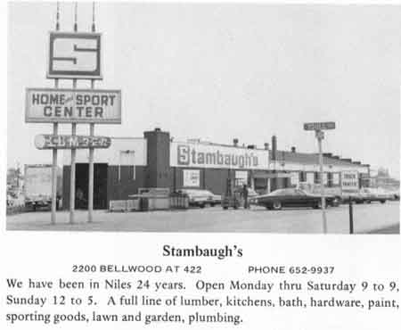

Ward-Thomas Museum


McKinley Heights Memories–Part 2.
Ward — Thomas
Museum
Home of the Niles Historical Society
503 Brown Street Niles, Ohio 44446
Click here to become a Niles Historical Society Member or to renew your membership
Click on any photograph to view a larger image.
News
Tours
Individual Membership: $20.00
Family Membership: $30.00
Patron Membership: $50.00
Business Membership: $100.00
Lifetime Membership: $500.00
Corporate Membership:
Call 330.544.2143
Do you love the history of Niles, Ohio and want to preserve that history and memories of events for future generations?
As a 501(c)3 non-profit organization, your donation is tax deductible. When you click on the Donate Button, you will be taken to a secure Website where your donation will entered and a receipt generated.
| McKinley
Heights Memories–Part 2. Directly across the street on the Northwest Corner was the McKinley Homestead, which later became the site of a farmer’s market, with trucks bringing in produce for sale. A gas station was built in 1949. It was bought by Tom Mohn in 1954 and he has been running it continuously since then. |
|
On the Southwest corner is another one of the few continuous businesses in our area. It has been in operation since 1924. It started when Leonard Higley began selling plants raised in two small green houses on his property. He doubled his capacity in 1924, and added a new building in 1940, specializing in landscaping and garden supplies. During these sixteen years it remained a family business, but in 1946 the business was further expanded and incorporated, changing its name to Flowers by Higleys, Inc. Currently managed by Gordon Higley, President, and staffed by employees who have remained competent and loyal through the years, it currently deals with floral arrangements, displays, gifts, gardening equipment, nursery items, and greenhouse plants of all kinds. The worker with the plant in the photograph is Bill Umeck. The nursery covers four times the area it started with, showing continuous progress by dedicated service in the field of beautifying our surroundings. Higleys celebrated its Golden Anniversary in 1974. PO2.285 |
|
|
In 1952 the first shopping plaza in the area was built on the corners. The first tenants were Terlecky’s Appliances, Adeline’s Clothing Store, People’s Drug Store, Kresge’s, Kroger’s and Loblaws. Present tenants are Skorman’s Miracle Mart Discount Store, McKinley Auto Parts, Morris Sport Shop, and a branch of the Niles Bank, including a drive up window.  Across the road is Walter’s Miracle Motors Used Cars Lot, a landmark since the 40’s. Men in McKinley Heights have always liked to gather in the neighborhood taverns and discuss world affairs and one of the first was started in 1936 by Tom Jordan and continued to be owned by his son until he closed it in 1974. It has recently been reopened under new management and a new name, Chris and Franks. Jim Coates has run one of the first car washes in the tricounty area – Mckinley Car Wash, an old landmark. Our business area boasts two modern clean motels. The Villa Arms Motel has been in business for twenty years, is of brick construction, and has been well maintained by Mr. and Mrs. Vincent Cordy. The McKinley Motel in owned by Mr. and Mrs. Richard Lockage, and has 10 well kept rooms. |
|
| |
|
Another old landmark is the red, white, and blue hat that is the home of the Army and Navy Garrison 422. It was formerly the Hat–O–Mat Located north of the Hat–O-Mat, “Ma” Perkins Chicken Inn was started in 1938 by Cy and Ruth Perkins in a house that stood on the north side of 422. Six months later, they bought the Stohl farm on the west side of 422 just north of Bellwood Avenue. and moved their restaurant there. In the same area as the Garrison is Egner’s Tank Truck Terminal which dispatches trucks hauling gasoline, diesel, and fuel oil over a wide area. PO1.1150 |
|
|
|
|
Going west of Route 422 within the boundaries of McKinley Heights is a convenience store, Heights Superette. This store has recently reopened after a devastating fire. It has been completely remodeled and provides a drive-up window for convenience, a selection of delicatessen foods, a wide variety of baked goods, and the usual staples found in neighborhood stores. It is owned by Pete Stunich. |
|
| |
|
{kind=link}
{kind=link}
{kind=link}
{kind=link}
{kind=link}